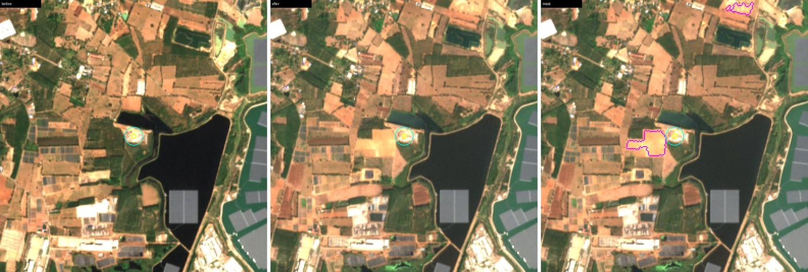
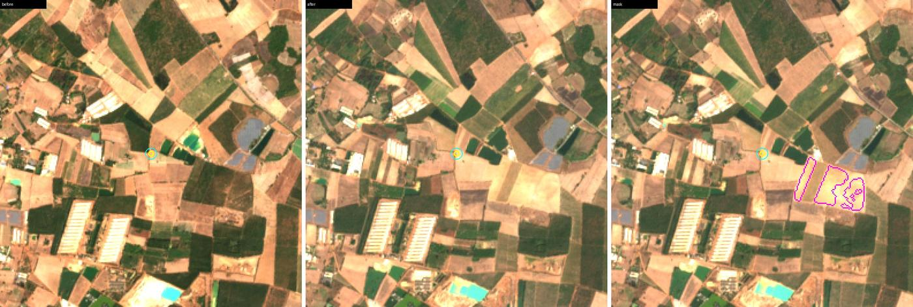
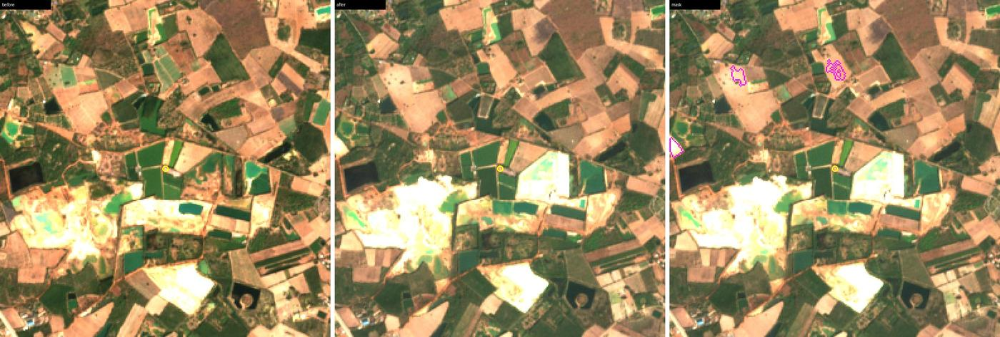
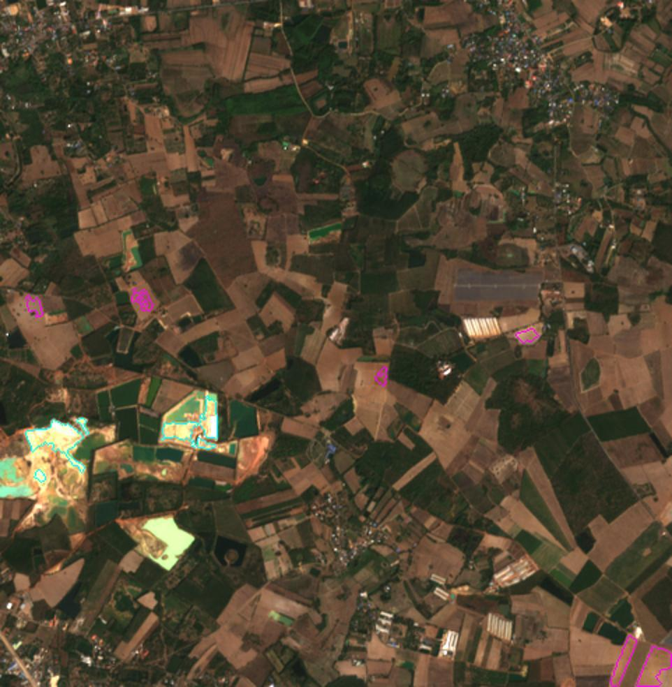

ผลเทส: เทียบจุดดาวเทียมกับทะเบียนและจุดข่าว
ติดตามกากอุตสาหกรรมที่ถูกลักลอบทิ้ง · ทดสอบ 28 พ.ย. 2569 · ภาพ Sentinel-2 ม.ค. 2568 → ม.ค. 2569 · หน้านี้ตั้งใจไม่ใส่พิกัดและชื่อบริษัท
0. อ่านหน้านี้ยังไง (ปูพื้นก่อน)
เราทดสอบอะไร: ระบบของเราใช้ภาพดาวเทียมฟรีเทียบ "ปีที่แล้ว" กับ "ปีนี้" ในฤดูเดียวกัน แล้วคัดจุดที่พื้นดินเปลี่ยนไปผิดปกติออกมา (ขั้น ① ในเล่ม) ปัญหาคือจุดที่คัดได้มีทั้งบ่อทิ้งที่ถูกกฎหมาย (ที่ทิ้งขยะของ อบต./เทศบาล, โรงงานรับจัดการกากที่มีใบอนุญาต) และจุดที่อาจลักลอบทิ้ง รอบนี้เลยลองเอาจุดที่ดาวเทียมจับได้ไปเทียบกับทะเบียนของรัฐและจุดที่เป็นข่าว ว่าแยกสองอย่างนี้ออกจากกันได้ไหม
ภาพแต่ละชุดมี 3 ช่อง:
- ซ้าย = ภาพสีจริง ม.ค. 2568 (ก่อน) · กลาง = ภาพสีจริง ม.ค. 2569 (หลัง) · ขวา = ภาพหลัง + เส้นที่ระบบวาด
- ■ เส้นชมพู = พื้นที่ที่กฎเดิมจับได้ (เคยเป็นพืช → กลายเป็นดินโล่ง/วัสดุ)
- ■ เส้นฟ้า = พื้นที่ที่กฎใหม่จับได้ (สว่างขึ้นมาก เช่น มีกองสีขาวโผล่)
- ● วงเหลือง = ตำแหน่งที่ทะเบียนของรัฐบอกว่ามีที่ทิ้งขยะ · ○ วงฟ้าใหญ่ = ขนาดพื้นที่ตามที่ทะเบียนแจ้ง (วาดเป็นวงกลมเทียบเท่า)
- 1 พิกเซลของภาพ = 10×10 เมตร จึงเห็นกองหรือบ่อขนาดสนามฟุตบอลขึ้นไปได้ชัด แต่ไม่เห็นถุงหรือถังเล็ก ๆ
หน่วย: 1 เฮกตาร์ (ha) = 10,000 ตร.ม. = 6.25 ไร่ ≈ สนามฟุตบอล 1.4 สนาม
ดัชนีที่ระบบใช้ (ไม่ต้องจำสูตร): NDVI = ความเขียวของพืช (สูง = ต้นไม้/นาเขียว, ต่ำ = ดินโล่ง/น้ำ/คอนกรีต) · BSI = ความเป็นดินโล่ง · ความสว่าง = ค่าแสงสะท้อนในช่วงที่ตาเห็น (กองยิปซัม ขี้เถ้าขาว หรือลานวัสดุจะสว่างมาก)
ป้ายสี: เขียว ใช้ได้/เชื่อได้สูง · ส้ม ใช้ได้แต่มีเงื่อนไข · แดง มีปัญหา ต้องแก้
1. เล่มเขียนไว้ว่า vs ผลเทสพบว่า
ตารางนี้เทียบสิ่งที่เล่มหลักฉบับ 21 หน้าเขียนไว้ กับสิ่งที่เจอจากการเทสจริงรอบนี้ ช่องขวาบอกว่าต้องแก้เล่มตรงไหน
| เล่มหลัก (ฉบับปัจจุบัน) | ผลเทสรอบนี้ | ต้องแก้เล่ม? |
|---|---|---|
| ใน 12 จุดใหญ่สุด น่าสงสัย 3 แห่ง (#3, #4, กลุ่ม #6/7/9) | #4 อยู่ติดที่ทิ้งขยะชุมชนของ อบต. ห่างขอบลานเดิม 92 ม. · กลุ่ม #6 อยู่ห่างที่ทิ้งอีกแห่ง 0.4–0.9 กม. · #3 ห่างที่ทิ้งใกล้สุด 1.5 กม. | แก้ เปลี่ยนป้ายเป็นระดับ ไม่ใช่ "น่าสงสัย" อย่างเดียว |
| กฎ "พืช → ดินโล่ง" ลดพื้นที่ 1,225 ตร.กม. เหลือ 41 จุด | ลดพื้นที่ได้จริง แต่พลาดกองวัสดุที่ทิ้งบนพื้นที่ที่เดิมเป็นดินหรือบ่อน้ำอยู่แล้ว · กฎที่สอง "สว่างขึ้นมาก + เป็นพื้นโล่ง" จับได้เพิ่ม 14.2 ha ที่ไม่ซ้ำกฎเดิมเลย | แก้ ขั้น ① ต้องใช้ 2 กฎ |
| "ยังไม่มีตัวเลขความแม่นยำ" · วางแผนเทียบกับจุดข่าว | ยังวัดไม่ได้ เพราะข่าวทั้ง 6 จุดบอกแค่หมู่บ้าน/วัด ไม่มีพิกัด | เพิ่ม ต้องให้คนในพื้นที่ปักหมุดก่อน |
| เทียบกับ "จุดที่มีทะเบียน" เพื่อแยกบ่อที่ถูกต้อง | ทะเบียนที่มีพิกัดมีแค่ขยะชุมชน · ทะเบียนโรงงานจัดการกากมีแค่ตำบล/เลขโฉนด · พิกัดในทะเบียนบางจุดไม่ตรงกับอะไรในภาพ | เพิ่ม บอกข้อจำกัดของข้อมูล |
| (เล่มไม่ได้พูดถึง) | ข่าวคราบน้ำมันที่ ต.หัวหว้า มาจากบ่อฝังกลบที่ได้ใบอนุญาตประเภท 105 → มีทะเบียนไม่ได้แปลว่าปลอดภัย | เพิ่ม ห้ามตัดจุดที่มีทะเบียนทิ้ง |
| ขั้น ② ยืนยันโดยคนในพื้นที่ | จำเป็นกว่าที่เขียนไว้: นอกจากยืนยันว่ามีกอง ต้องใช้ปักหมุดจุดข่าวและตรวจพิกัดทะเบียนด้วย | เสริม |
2. ผลรายจุด
เลือกดู 4 พื้นที่: ที่ทิ้งขยะชุมชน 2 แห่งที่อยู่ใกล้จุด "น่าสงสัย" ในเล่ม และพื้นที่รอบ ต.หัวหว้า ที่เป็นข่าว แต่ละภาพกว้างประมาณ 2.6–4.4 กม.
ที่ทิ้งขยะชุมชน อบต.ท่าตูม กับจุด #4 ติดทะเบียน แต่ใหญ่เกินที่แจ้ง

- จุดในทะเบียนตกบนลานกองเดิมพอดี → พิกัดทะเบียนตรงนี้เชื่อได้
- พื้นที่ที่จับได้อยู่ทางตะวันตก ติดลานเดิม (ห่างขอบ 92 ม.) · ปีก่อนเป็นพืช ปีนี้เป็นดินโล่ง · 6.3 ha
- ทะเบียนเขียนว่าทั้งที่ทิ้งมีแค่ 16 ไร่ (≈ 2.6 ha) และเป็นเทกองกลางแจ้ง 67 ตัน/วัน ใช้พื้นที่ไปแล้ว 100%
- สรุป: ไม่ใช่ "ลักลอบทิ้ง" แบบที่เล่มสื่อ แต่อาจเป็นที่ทิ้งที่ขยายเกินที่แจ้ง → ยังต้องตามต่อ
ที่ทิ้งขยะชุมชน อบต.โคกปีบ (บ่อเก่า) กับกลุ่ม #6/7/9 พิกัดทะเบียนเชื่อไม่ได้

- จุดในทะเบียนไม่ตรงกับอะไรในภาพ · บ่อสีฟ้าที่เล่มเรียกว่าน่าสงสัยอยู่ห่างไปไม่ถึง 200 ม. อาจเป็นบ่อเก่าของที่ทิ้งนี้เอง
- เส้นชมพู (#6/7/9) ห่างจุดทะเบียน 0.4–0.8 กม. ดูเป็นแปลงไร่ที่ถูกไถ
- สรุป: ยังสรุปไม่ได้ ต้องให้คนในพื้นที่ยืนยันว่าที่ทิ้งจริงอยู่ตรงไหน
รอบ ต.หัวหว้า / ต.โคกปีบ: ลานขาวขยายตัว กฎเดิมพลาด


- สาเหตุ: กฎเดิมดูเฉพาะจุดที่ปีก่อนเป็นพืช แต่ลานพวกนี้ปีก่อนก็เป็นดินหรือบ่ออยู่แล้ว · การเทกองเพิ่มบนพื้นที่โล่งจึงหลุดหมด
- กฎใหม่: ค่าสะท้อนแสงช่วงตาเห็นเพิ่มเกิน 0.08 + ตอนนี้สว่างเกิน 0.20 + NDVI หลัง < 0.2 · ค่าเกณฑ์ตั้งเองจากภาพคู่เดียว ยังไม่ได้ปรับ
- ลานสีขาวเข้ากับข้อมูลที่ว่ายิปซัมเป็นกากที่พบมากที่สุดในปราจีน (45%) แต่ดาวเทียมบอกชนิดสารไม่ได้ และพื้นที่นี้อาจเป็นกิจการที่มีใบอนุญาต
ข่าวคราบน้ำมัน ต.หัวหว้า (ก.ย. 2569) มีใบอนุญาต ≠ ปลอดภัย
ข่าวระบุว่าคราบมาจากบ่อของโรงงานคัดแยกและฝังกลบประเภท 105 ที่ได้ใบอนุญาต และมีคำสั่งตามมาตรา 39 ตามมา · ทะเบียนโรงงานบอกได้แค่ว่าอยู่ตำบลไหน เลขโฉนดอะไร จึงยังปักตำแหน่งบนภาพไม่ได้
3. ข้อมูลแต่ละแหล่งมาจากไหน เชื่อได้แค่ไหน
ไล่จากชั้นที่ "ดิบ" ที่สุด (ดาวเทียมวัดแสง) ไปถึงชั้นที่ยืนยันได้จริง (ลงพื้นที่) ยิ่งลงล่างยิ่งใกล้ความจริงว่า "เป็นกากหรือไม่" แต่ยิ่งต้องใช้คนและเวลา ระบบเราทำงานอัตโนมัติได้แค่ 2–3 ชั้นบน ชั้นที่เหลือต้องอาศัยคนในพื้นที่และเจ้าหน้าที่
| ชั้นข้อมูล | ที่มา | เชื่อได้เรื่องอะไร | ข้อจำกัดที่เจอจริง |
|---|---|---|---|
| ค่าพิกเซลดาวเทียม | Sentinel-2 L2A (ESA) ผ่าน Element 84 Earth Search · ฟรี | สูง วัดแสงจริง ตำแหน่งคลาด ~1 พิกเซล (10 ม.) | เมฆ/เงาเมฆหลุดบ้าง · ใช้ภาพคู่เดียว |
| กฎจับความเปลี่ยนแปลง | สูตรที่เราตั้งเอง (NDVI, BSI, ความสว่าง) | กลาง บอกได้แค่ "พื้นที่เปลี่ยน" | เตือนผิด 9 ใน 12 จุดใหญ่สุด · พลาดลานขาวที่ขยายตัว · ยังไม่รู้ว่าพลาดบ่อจริงไปกี่บ่อ |
| คนดูภาพติดป้าย | ทีมดูภาพสีจริงก่อน/หลัง | กลาง เป็นความเห็น | เรียก 3 แห่งว่าน่าสงสัย แต่ 2 แห่งติดที่ทิ้งที่มีทะเบียน |
| ทะเบียนที่ทิ้งขยะชุมชน | thaimsw.pcd.go.th · อปท. กรอกเอง | กลาง รู้ว่ามีที่ทิ้งของรัฐอยู่แถวนั้น | จุดเดียวไม่มีขอบเขต · 102 จุดพิกัดผิดรูปแบบ · บางจุดไม่ตรงภาพ · หลายช่องเป็น "-" |
| ทะเบียนโรงงาน 101/105/106 | ชุดข้อมูลเปิดกรมโรงงานฯ (11 พ.ย. 2569) | สูง ว่ามีใบอนุญาตจริง | ไม่มีพิกัด · 168 ใบ แต่ 140 ชื่อ (บริษัทเดียวหลายใบ) |
| จุดข่าว | สื่อ + รายงานผลแล็บกรมโรงงานฯ | กลาง มีคนเดือดร้อนจริงในย่านนั้น | ละเอียดสุดแค่หมู่บ้าน/วัด · ไม่มีรายการ ~60 จุดของภาคประชาชนแบบมีพิกัดเปิดเผย |
| ยืนยันภาคสนาม | เจ้าหน้าที่ / ตรวจน้ำ-ตะกอน | สูงสุด ชั้นเดียวที่ยืนยันว่าเป็นกากจริง | ระบบเราทำแทนไม่ได้ |
4. วิธีขยายวงที่ปรับตามผลเทส
แนวคิด: แทนที่จะกวาดดูทั้งสองอำเภอทีเดียว ให้เริ่มจาก "จุดที่รู้แน่ว่ามีอะไร" แล้ววาดวงกลมขยายออกไปทีละขั้น ดูว่าในวงมีจุดดาวเทียม ทะเบียน และคนที่อาจได้รับผลกระทบอะไรบ้าง ทำให้ทีมดูทีละพื้นที่เล็ก ๆ ได้ละเอียด และค่อยขยายเมื่อวิธีนิ่งแล้ว
- จุดตั้งต้น ใช้ที่ทิ้งในทะเบียนหรือจุดกลางตำบลที่มีข่าว (ข่าวไม่มีพิกัด) → ให้คนในพื้นที่ปักหมุดจริงผ่าน LINE
- ขยายวง R = 0.5 / 1 / 2 / 5 กม. · ในแต่ละวงนับ: จุดดาวเทียม (2 กฎ), ที่ทิ้งในทะเบียน, ใบอนุญาตในตำบล, หมู่บ้าน/นา/บ่อปลา/จุดรับน้ำประปา
- แยก 4 กลุ่ม (ไม่มีกลุ่มไหนตัดทิ้ง):
- ① อยู่ในรั้วกิจการที่มีทะเบียน → เฝ้าดูการขยาย
- ② ติดรั้วแต่ใหญ่เกินที่แจ้ง (แบบท่าตูม) → แจ้งเจ้าหน้าที่ตรวจ
- ③ ไม่มีทะเบียนในวง แต่ตำบลมีข่าว → ความสำคัญสูงสุด
- ④ ไม่มีทั้งสองอย่าง → ดูภาพเพิ่ม
- ขอบเขตกิจการ ตีเส้นเองจากภาพ ห้ามใช้ระยะจากจุดทะเบียนอย่างเดียว
5. ข้อจำกัดของเทสรอบนี้
- ภาพคู่เดียว (ม.ค. 2568 กับ ม.ค. 2569) · ดูแค่ 4 พื้นที่
- เกณฑ์กฎใหม่ยังไม่ได้ปรับ · ยังไม่ได้รันกฎใหม่ทั้ง 1,225 ตร.กม.
- ยังวัดอัตราพลาดไม่ได้ จนกว่าจะมีจุดข่าวที่ปักหมุดแล้ว
- ทั้งหมดดูจากภาพ 10 ม. · "ใกล้ทะเบียน" ไม่ได้แปลว่าถูกกฎหมาย และ "ไม่มีทะเบียน" ไม่ได้แปลว่าผิด
ที่มา: thaimsw.pcd.go.th (ทะเบียนที่ทิ้งขยะชุมชน) · diw-dataset.diw.go.th ชุด factype101-105-106 · ฐานเศรษฐกิจ, เดลินิวส์, Thai PBS Decode, มติชน, รายงานผลแล็บ e-report.diw.go.th · Sentinel-2 L2A ผ่าน earth-search.aws.element84.com